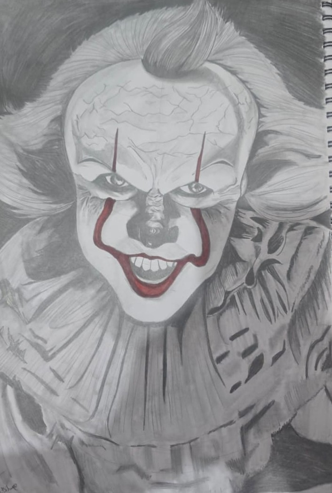
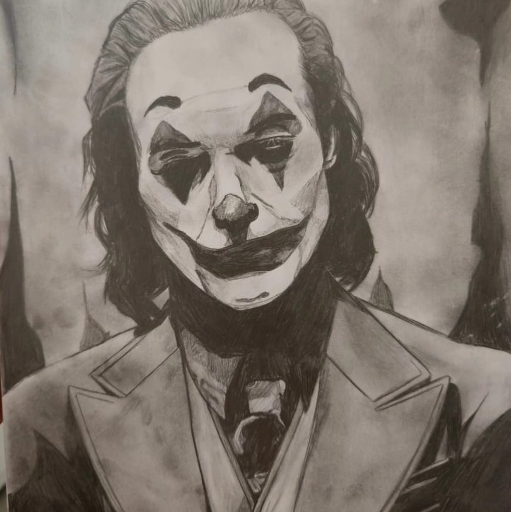

ETHAN GALLERY
Votre photo devient une œuvre.
Transformez vos plus belles photos en tableaux personnalisés, créés spécialement pour vous.
Commander
ETHAN GALLERY
Transformez vos plus belles photos en tableaux personnalisés, créés spécialement pour vous.
Commander
Je réalise des tableaux personnalisés, des peintures et des portraits à partir de vos photos, de vos idées et de vos inspirations. Chaque création est réalisée à la main avec attention afin de transformer un souvenir, une personne ou une idée en une œuvre unique. Mon objectif est de créer un tableau qui vous ressemble, que ce soit pour décorer votre intérieur, offrir un cadeau original ou simplement donner vie à une image qui compte pour vous.






Je me présente, je m’appelle Ethan et ma passion est l’art. J’aime dessiner, peindre et donner vie à mes idées à travers des créations uniques. Au fil du temps, j’ai développé mon propre style et commencé à réaliser des portraits et des tableaux personnalisés. À travers Ethan Gallery, je souhaite partager mon univers et créer des œuvres qui ont une vraie signification pour chaque personne.
decouvrer plus de tableaux portraits et tout ce qui concerne mon travail d'artiste sur instagram @Ethan.bitan.
Tu peux me contacter ici.
whatsapp : +972 55 995 5591
instagram : @Ethan.bitan